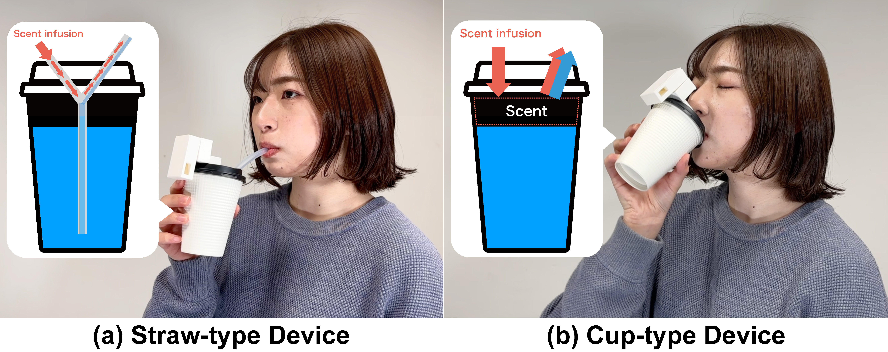
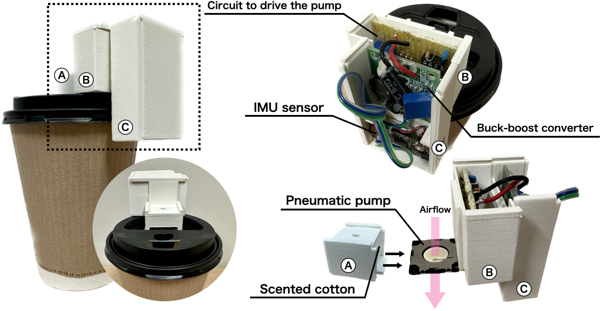
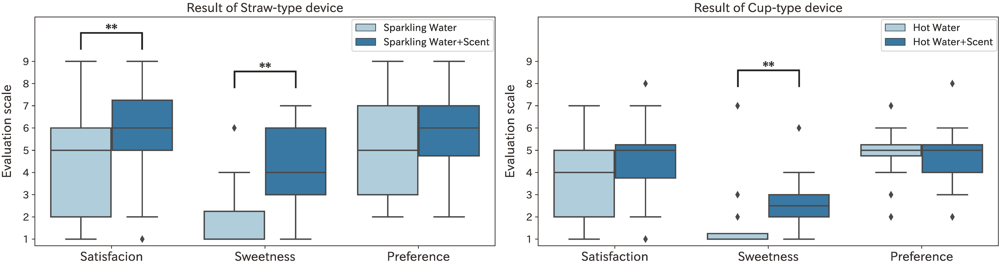
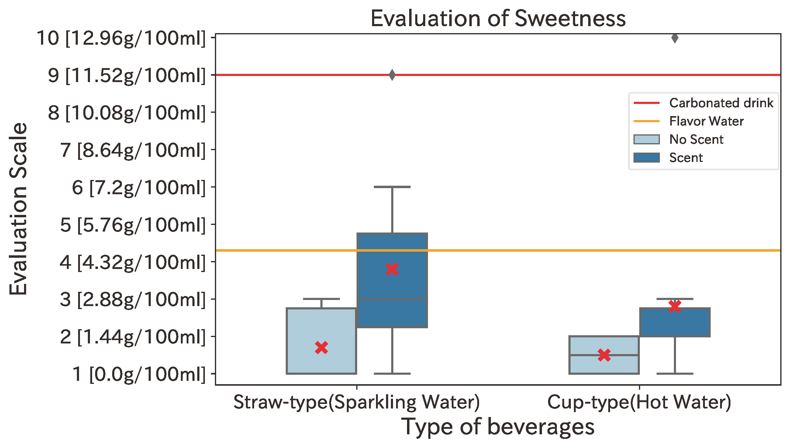
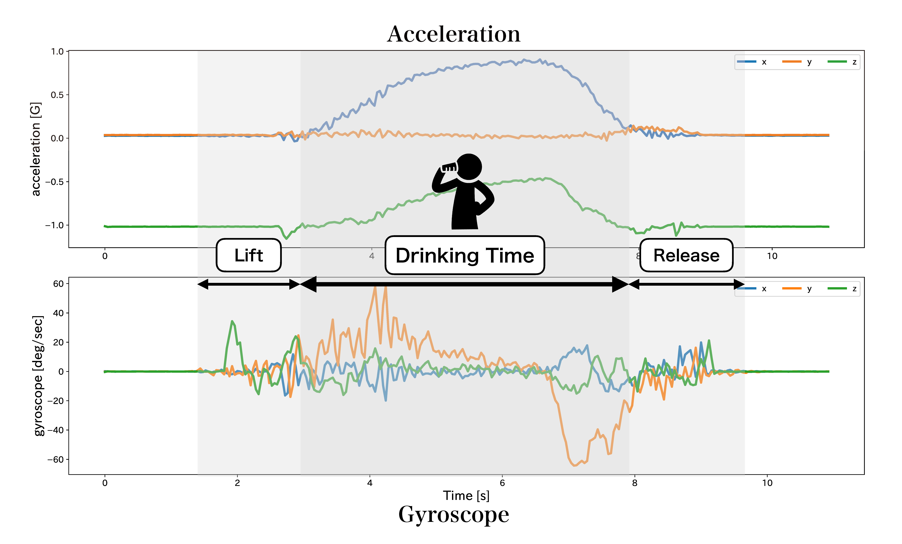
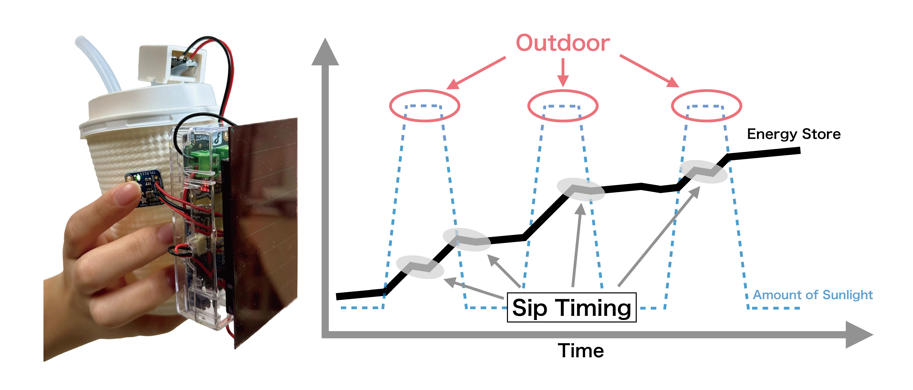
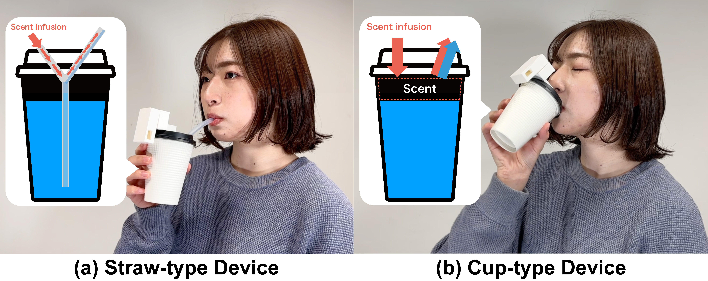
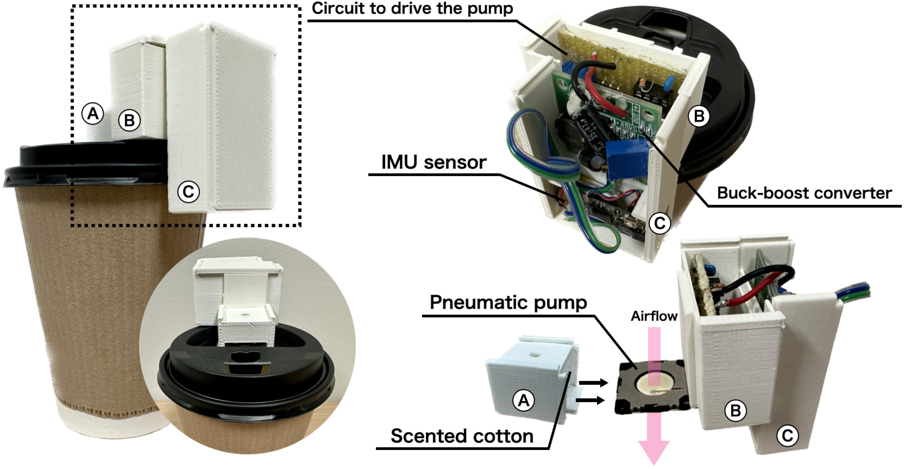
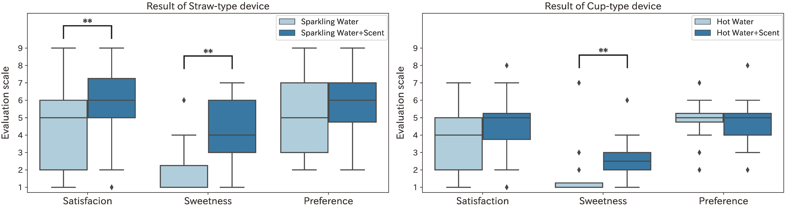
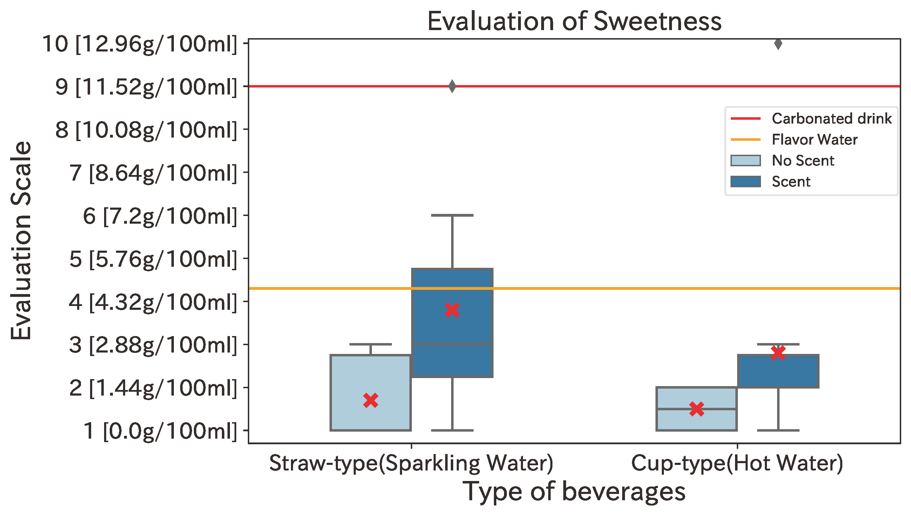
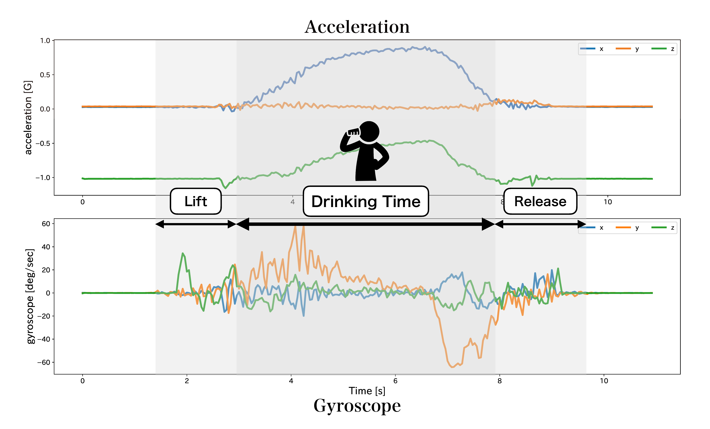
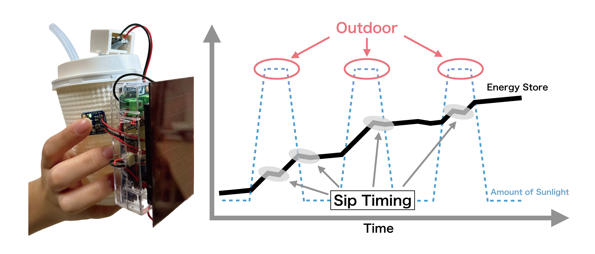
Abstract
In this paper, we introduce Kaolid, an olfactory interface that uses a lid mechanism to augment the flavor of beverages by delivering scents as retronasal smell. Kaolid aims to promote the consumption of healthier beverages by intensifying their perceived taste through the release of scents during drinking. The system features a compact olfactory display and an IMU sensor, triggering scents in response to drinking movements. It comes in two models: a straw-type for cold beverages and a cup-type for hot drinks. We tested the interface using sparkling and hot water and measured its efficacy in enhancing perceived sweetness when paired with scents. Results showed significant enhancements in all evaluation metrics (taste satisfaction, perceived sweetness, and preference) with the straw-type device. Notably, the perceived sweetness increased by an amount equivalent to about 2.88 grams of sugar when a retronasal smell was introduced compared to when no scent was present. This innovative interface holds promise in elevating the flavor of sugar-free drinks and could support those aiming to limit sugar consumption. Furthermore, this research contributes to the future of IoT systems for health support by harnessing the power of scent, opening avenues for novel approaches in sensory-driven well-being advancements.
Publication
Daiki Mayumi, Yugo Nakamura, Yuki Matsuda, Shinya Misaki, Keiichi Yasumoto: "Kaolid: a Lid-type Olfactory Interface to Present Retronasal Smell towards Beverage Flavor Augmentation,"The 13th International Conference on the Internet of Things (IoT'23), pp.1-8, Nagoya, Japan, Nov. 7-10, 2023. DOI: https://dl.acm.org/doi/10.1145/3627050.3627056
Daiki Mayumi, Yugo Nakamura, Yuki Matsuda, Kentaro Ueda, Shinya Misaki and Keiichi Yasumoto: "Kaolid: Lid-type Olfactory Interface to Improve Taste of Beverages with Ortho-Retronasal Smell,"The 20th International Conference on Pervasive Computing and Communications (PerCom '23), Demo, Atlanta, USA, pp.303-305, Mar. 13-17, 2023. DOI: https://www.computer.org/csdl/proceedings-article/percom-workshops/2023/10150412/1O9TNZGDilq
真弓大輝, 中村優吾, 松田裕貴, 三崎慎也, 安本慶一: “Kaolid：飲料の味変化のための口中香を実現する蓋型嗅覚デバイスの設計と基礎評価”, 情報処理学会 IoT行動変容学研究グループ 第3回研究会 (BTI3), pp.1-8, 福岡県福岡市, 2023年3月.
真弓大輝, 中村優吾, 松田裕貴, 三崎慎也, 安本慶一: “鼻腔経路の異なる香りを提示可能なデバイスの設計と味覚に与える影響の基礎評価”, デモ, 第30回マルチメディア通信と分散処理ワークショップ（DPSWS2022）, pp.175-180, 鳥取県米子市, 2022年10月.